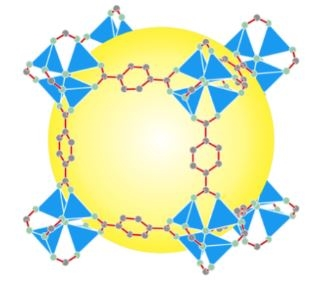
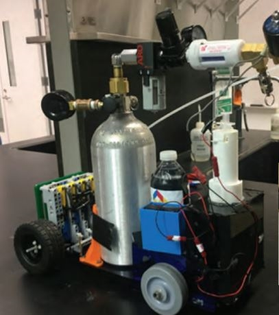
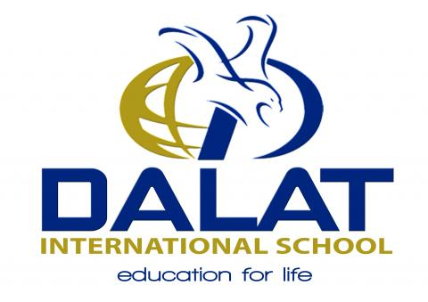
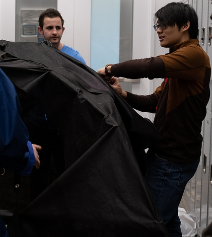
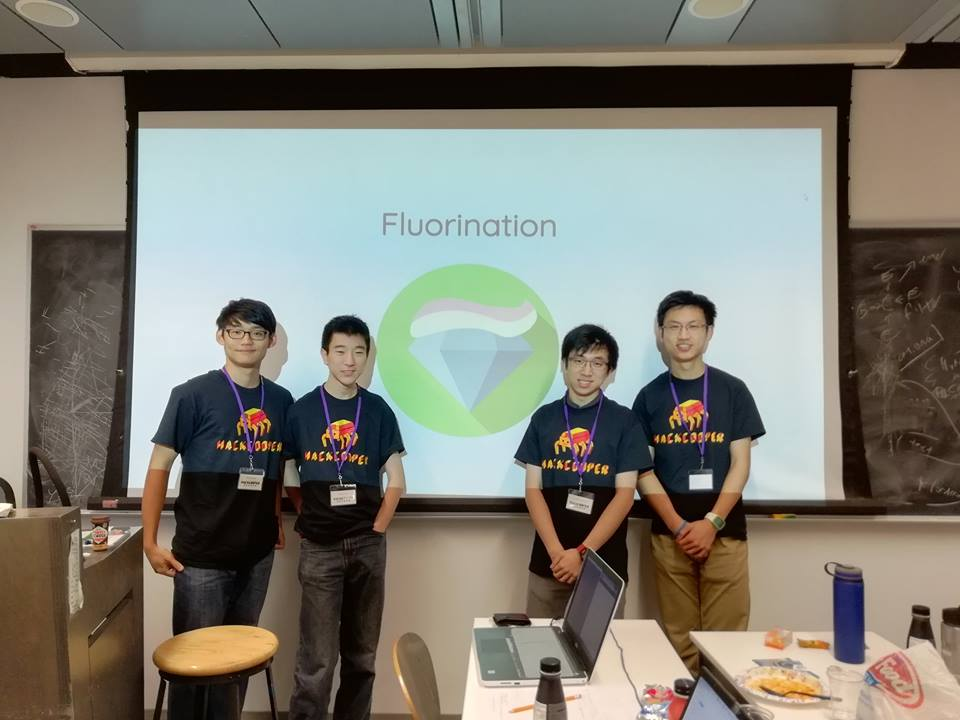
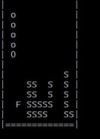

ONGOING
Metallic Organic Frameworks Research

Together with Dr. Richard Kyung and Mr. Woong Jae Baek, we conducted research on
metal organic frameworks used in optoelectronics. The efficiency of
the optoelectronic devices were observed after changing the particles' structure. Gaussian and ChemCraft
were used to guage the stability and effiency.
See it!
This Website!

It is as you see it - a work in progress!
I designed this website using HTML5, Vanilla CSS3 and Javascript. In order to do so, I watched YouTube tutorials, searched many Googles, and asked professional friends
to get to where it is today.
Improvements to come!
See it!
Chem-E-Car

I am a part of the 2019 Chem-E-Car team for the Cooper Union.
Using a pressure-powered chemical reaction in parallel with a color-changing reaction, our goal is to
take on the national competition!
See it!
FINISHED
Dalat International School Strategic Plan

As the president of the student council, the head of school invited me to represent the student body in coming up
with their 5 year strategic plan. I surveyed students, helped build the vision and mission statements, and argued
against teacher-centric changes. This plan has been in effect for a year, and I still contact the school about their progress.
See it!
RIFSK

The Refugees in-Flight Shelter Kit (RIFSK) is a light-weight, fully biodegradable, and sturdy structure that
can fit a 1.6m tall mother and her two children. I was a part of the management team that facillitated communication between the groups.
I was also the sewing teacher and center for purchasing and communication. I also designed the RIFSK website.
See it!
Fluorination

In order to satiate high-schoolers' and college students's desire for a quick and inuitive answer to their
questions, my hackathon team and I created Fluorination . The goal of Fluorination is to incentivize
information sharing platform that is from students to students . This website won Best Use of Algolia
during HackCooper2018.
See it!
TetrHiss

Using C++, I developed a mashup game between Snake and Tetrhiss . Many times more difficult than Snake and Tetrhiss alone,
this game takes patience as well as planning. The snake moves and has to eat 4 randomly spawning food items.
On the fourth snack, whatever shape it is will be the tetris shape you can move.
See it!